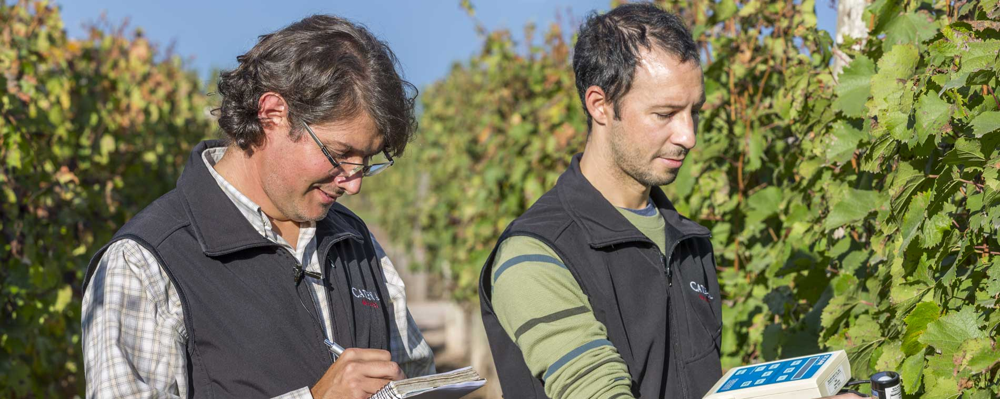
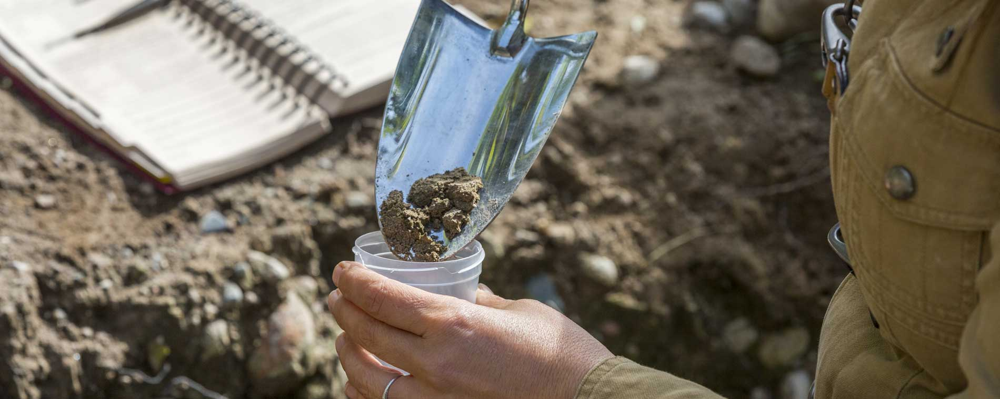
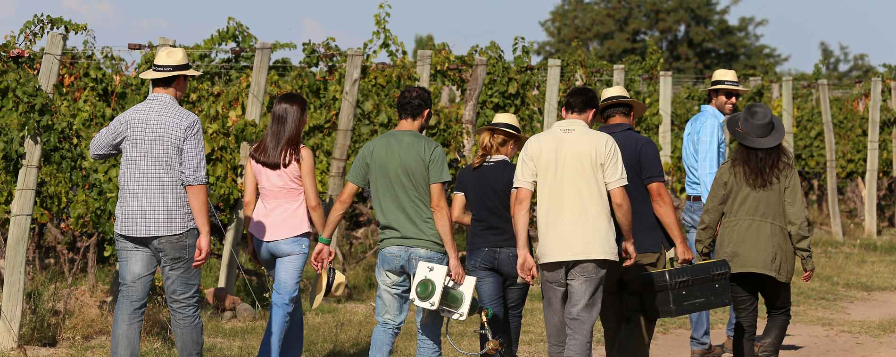

.jpg )
INSTITUTO
Hoy el Instituto del Vino de Catena , en conjunto con el equipo de Enología y Viticultura de Catena, tiene la ambiciosa misión de hacer vinos argentinos que puedan estar a la altura de los mejores del mundo y de hacer avanzar las regiones vitivinícolas de Argentina por otros 100 años.
En colaboración con la Universidad de California Davis y la Universidad Nacional de Cuyo , The Catena Institute brinda liderazgo para los programas universitarios de investigación y desarrollo. A través de estas alianzas académicas, el Instituto busca avanzar y promover el conocimiento del vino en beneficio de los técnicos enólogos y de la comunidad vitivinícola en su conjunto.
ESTUDIO DE LA TIERRA
La visión del Catena Institute of Wine es seguir elevando nuestra variedad histórica Malbec y nuestras regiones vitivinícolas argentinas por otros 100 años. La revolución del vino de altura de Nicolás Catena Zapata condujo al descubrimiento de un nuevo terruño para el vino, el Viñedo Adrianna a casi 5,000 pies de altura.
Hoy, el equipo de Katina Institute of Wine se dedica a estudiar cada metro, cada roca, cada insecto y microorganismo en el Viñedo Adrianna, convirtiéndolo quizás en el viñedo más estudiado del mundo.
UNIVERSIDAD
La Universidad Nacional de Cuyo es una de las universidades más respetadas de Argentina. Su Escuela de Agronomía ha formado a los mejores viticultores de la región. Actualmente, estamos trabajando con sus mejores estudiantes de posgrado en un esfuerzo por caracterizar los terroirs vitivinícolas de Mendoza.
Como resultado, hemos descubierto que los suelos de Adrianna Vineyard están vivos y que, de hecho, las rizobacterias presentes en este suelo contribuyen en gran medida a la calidad de la uva ya una mejor adaptación de las plantas a su entorno.
